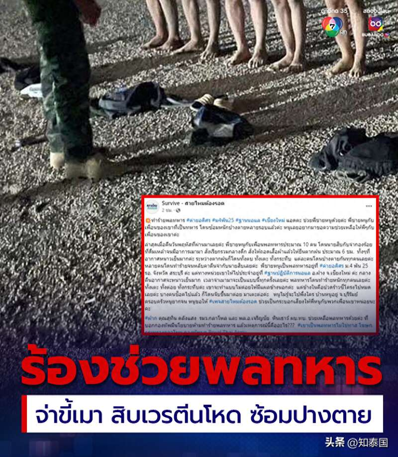
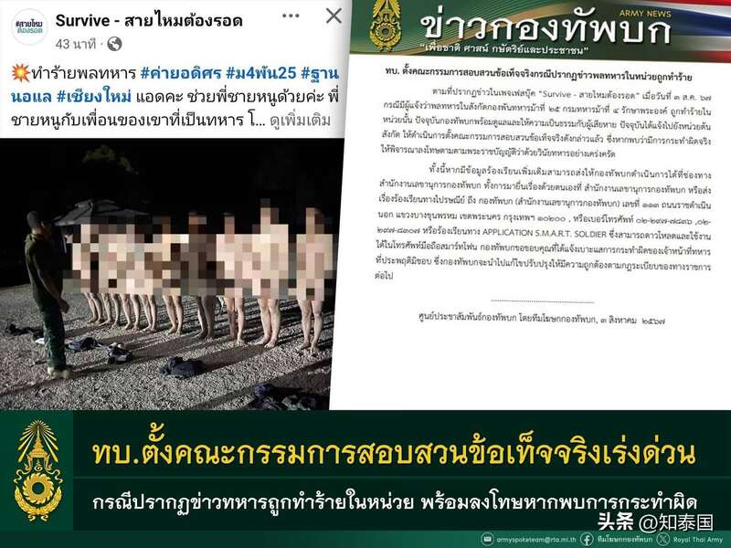
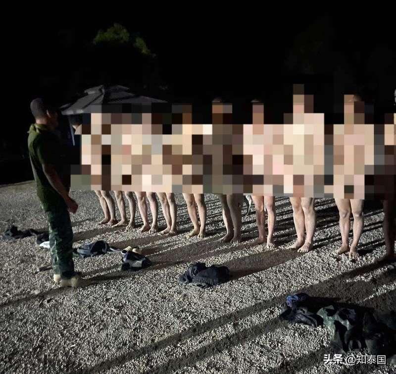

8月3日，泰国清迈府某军队的一名士兵的家属向清迈赛迈县某个大V博主发帖求助，称其哥哥所在的训练基地内的10名士兵遭指挥官虐待，陆军现已着手调查。

据士兵的家属透露，清迈某军队的一名指挥官因喝醉酒后随意体罚士兵并对他们施暴，他不仅强制10名士兵脱光衣服，还命令他们站在雨中淋雨6个小时。这些士兵服从命令站在雨中期间，该名指挥官还对他们拳打脚踢、扇耳光，直至其中部分人体力不支晕倒。家属希望通过发帖引起社会关注，要求军方为10名士兵讨回公道，对指挥官进行惩处。目前，该帖子被多家泰媒转载报道，引起泰国网友的激烈讨论，也引起泰国陆军的高度关注。

8月4日，泰国陆军发布了公告文件，称军方目前已获悉此事，且时刻准备好为受害者提供帮助及伸张正义，若经查实军队指挥官存在违法行为，将根据泰国《军事纪律法》进行处罚。
Advertisements